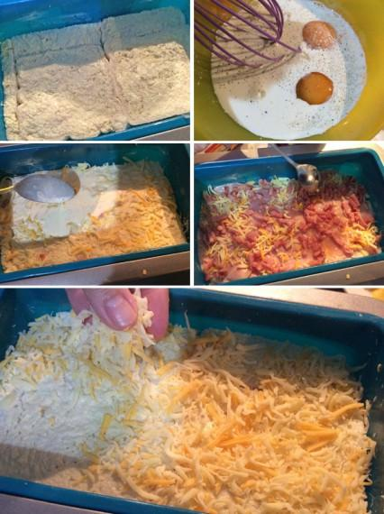
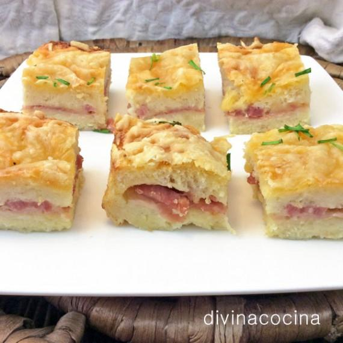

Pastel de pan de molde gratinado
Ingredientes: para 6 personas.
"Rebanadas de pan de molde sin corteza"
Lonchas de jamón york cortadas un poquito más gruesas de lo normal
Taquitos de bacón
Mantequilla
2 vasitos de leche o leche evaporada, o mitad leche y nata
2 huevos
Sal y pimienta
Queso rallado
Elaboracion:
En una bandeja de horno engrasada, colocamos las rebanadas de pan sin corteza untadas de mantequilla por ambos lados, y sin que queden huecos, que podemos cubrir con trozos pequeños de pan.
Batimos los huevos con la leche, un poco de sal y pimienta y cubrimos el pan (no gastes más de la mitad del batido), cuidando que quede empapado por igual (esto es muy importante).
Batimos los huevos con la leche, un poco de sal y pimienta y cubrimos el pan (no gastes más de la mitad del batido), cuidando que quede empapado por igual (esto es muy importante).
Terminamos de poner sobre el pan el batido de huevos. Si es necesario batimos más leche y huevos e incorporamos, antes que quedarnos cortos y que resulte seco. Movemos la bandeja para que la mezcla entre bien por todos lados.
Espolvoreamos de queso rallado y horneamos con calor arriba y abajo (medio-fuerte) hasta que cuaje y se dore la superficie (son suficientes unos 10 minutos para no pasarnos). Servimos caliente o templado (también lo puedes servir frío, pero el efecto del queso fundido se pierde), cortado en cuadraditos, como en la foto.
